Dia 1, de graça
São as 13 páginas do primeiro dia do TJPB dia a dia para Analista Judiciário, Área Judiciária, do jeito que chegam no PDF da Semana 1. Leia na ordem, como se fosse estudar hoje.
Roteiro
Os três temas do dia, de matérias diferentes, o tempo de cada etapa (2h30 no total) e como usar o dia.
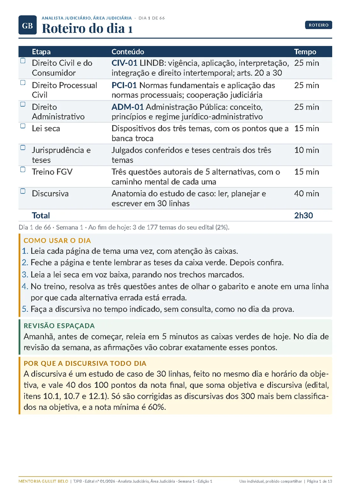
Direito Civil e do Consumidor
LINDB: vigência e revogação das leis, conflito aparente de normas e o modo de interpretar e integrar.
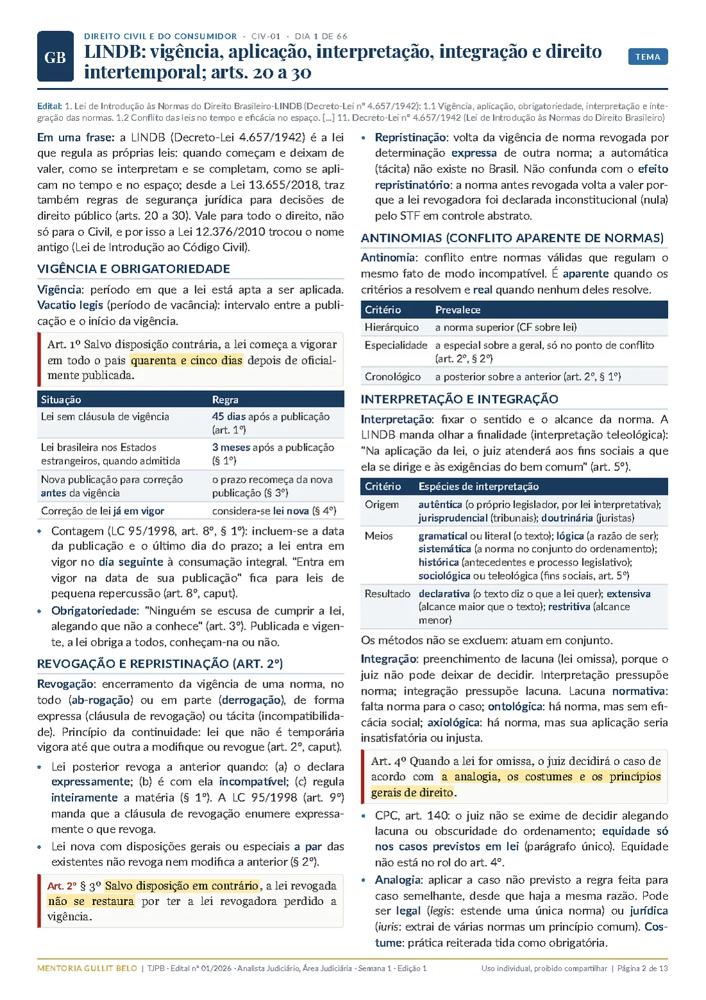
Direito Civil e do Consumidor, continuação
Direito intertemporal e eficácia da lei no espaço.
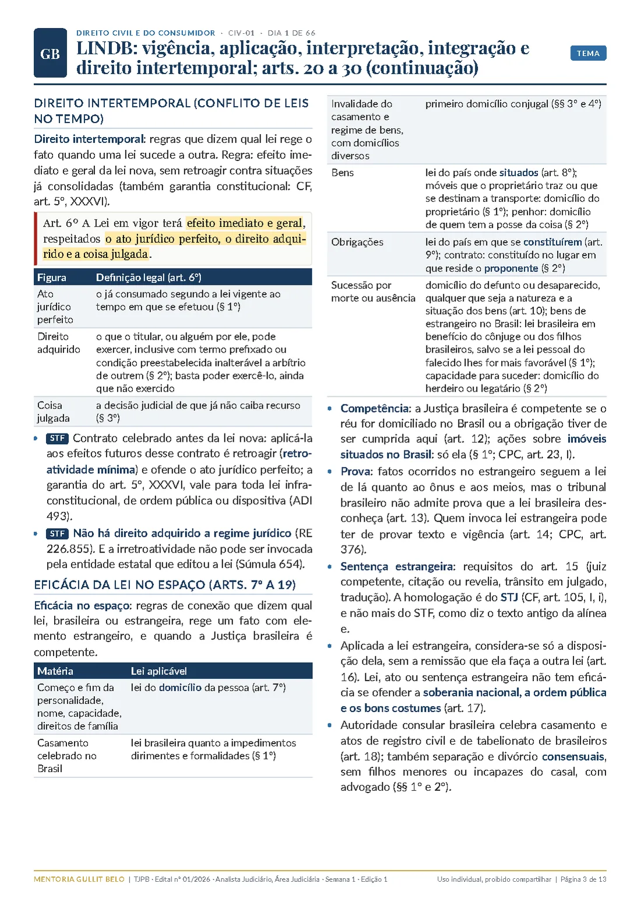
Direito Civil e do Consumidor, continuação
Segurança jurídica no direito público (arts. 20 a 30), com as caixas Para guardar, No Tribunal de Justiça e Pegadinhas.
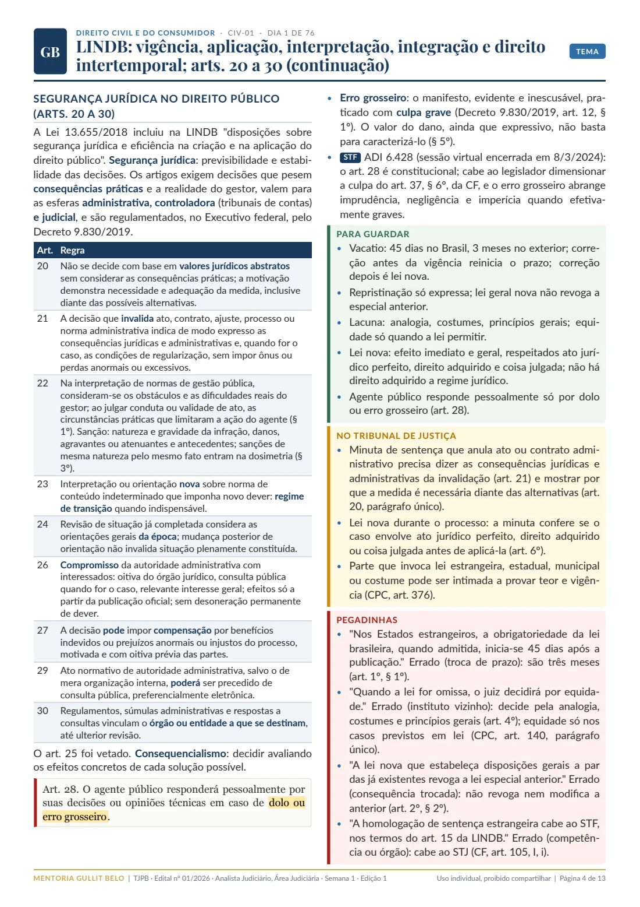
Direito Processual Civil
Normas fundamentais do CPC, com o contraditório e a vedação da decisão surpresa, e a ordem cronológica de conclusão.
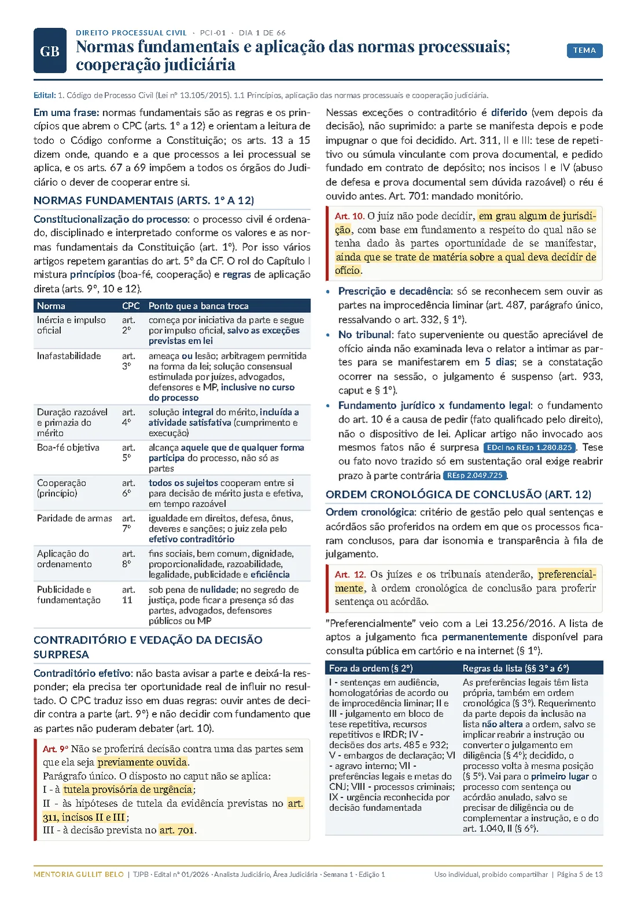
Direito Processual Civil, continuação
Aplicação das normas processuais e cooperação judiciária nacional.
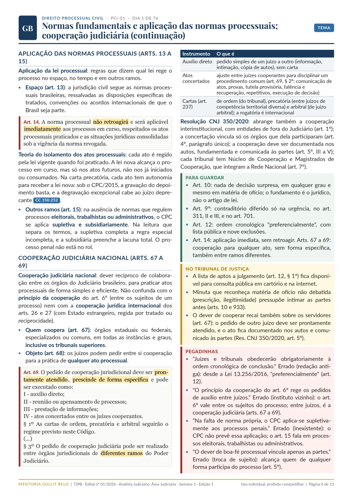
Direito Administrativo
Administração Pública em dois sentidos, organização, papel do Estado e regime jurídico-administrativo.
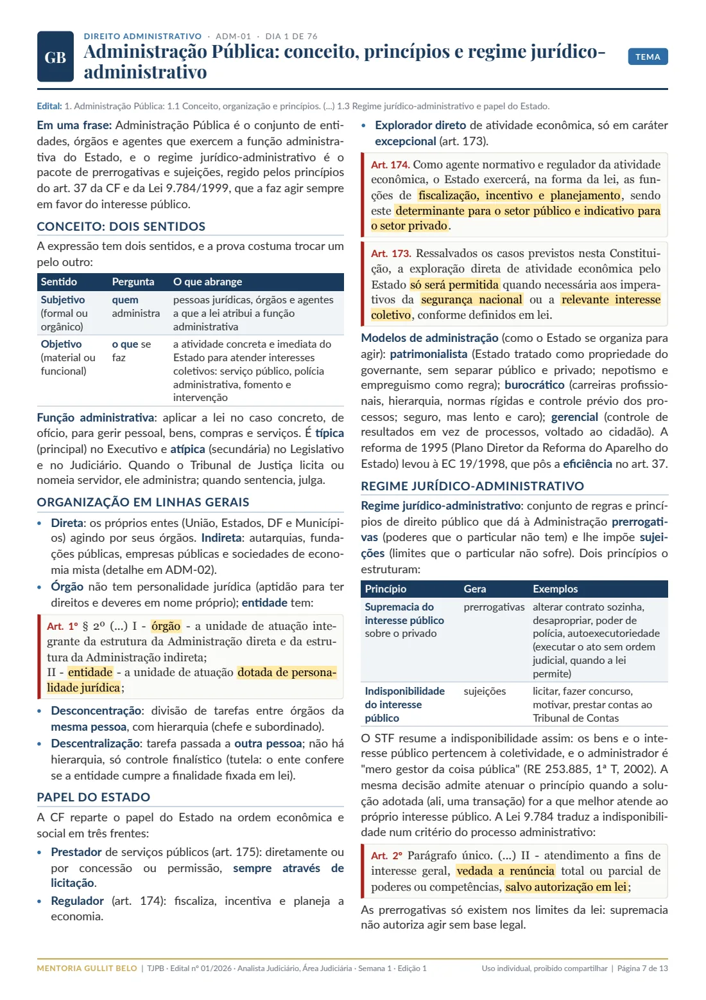
Direito Administrativo, continuação
Princípios expressos e implícitos e o nepotismo na prática.
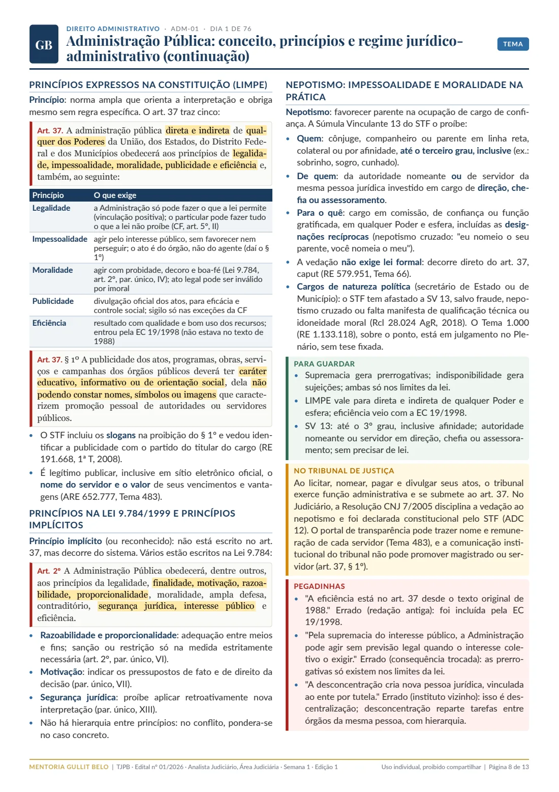
Lei seca do dia
Os dispositivos dos três temas, em texto literal e vigente, com os detalhes que a banca troca.
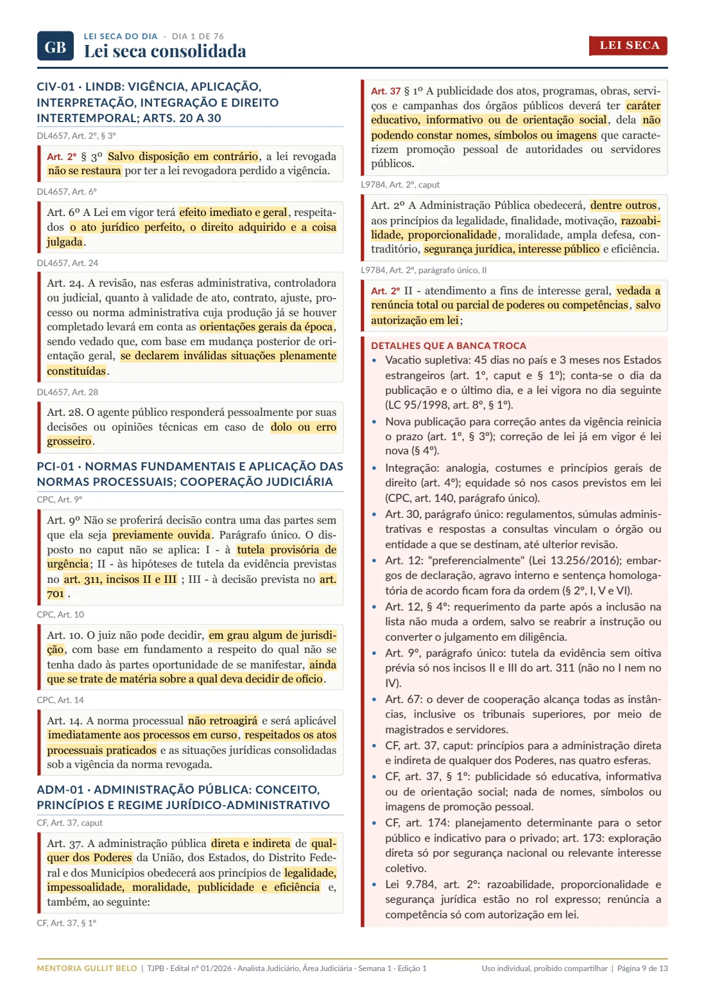
Jurisprudência e teses
Julgados conferidos no site oficial do tribunal e as teses do dia para fixar.
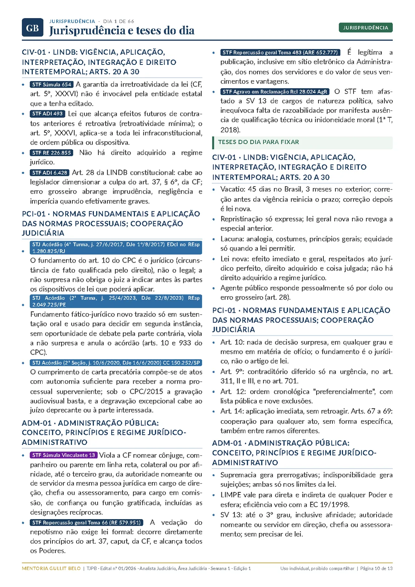
Treino FGV
Três questões autorais de cinco alternativas, no padrão da prova.
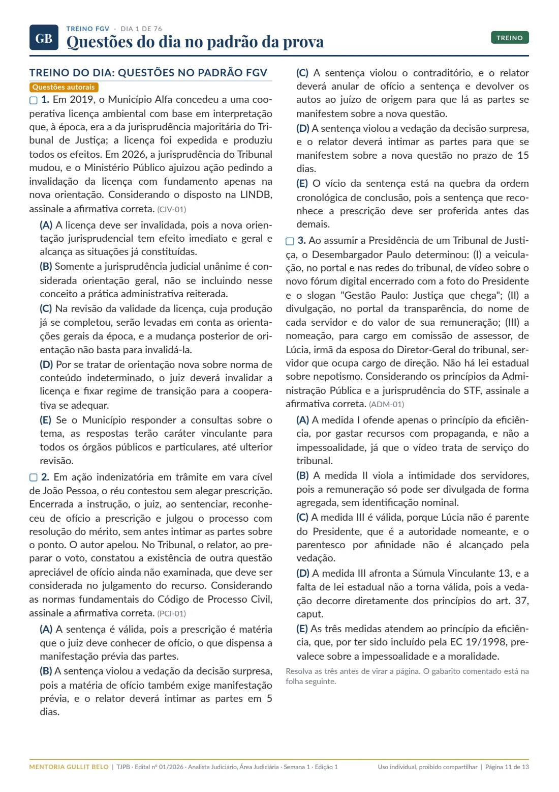
Gabarito comentado
O comentário de cada alternativa, com a técnica que a banca usaria, e o caminho mental de cada questão.
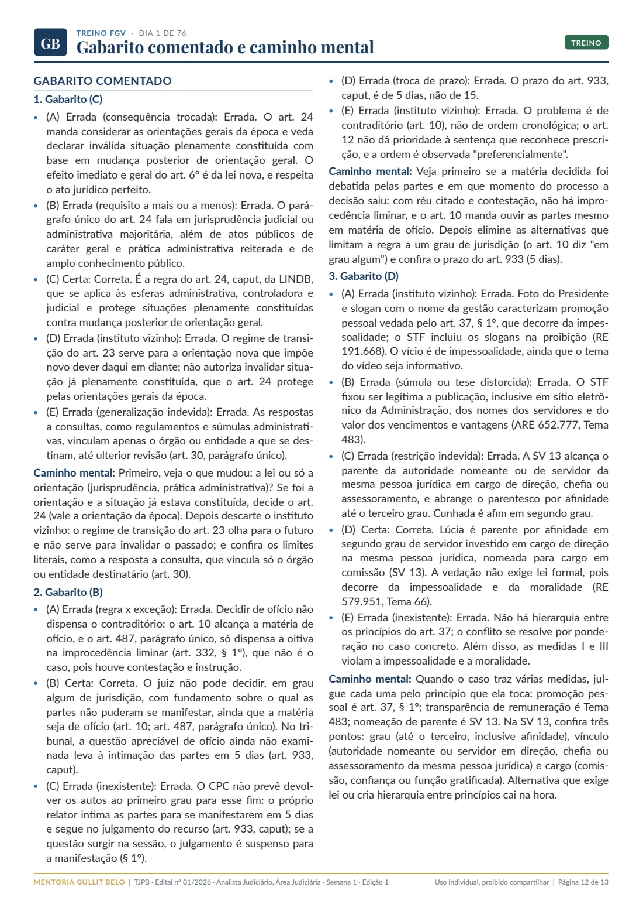
Discursiva
Anatomia do estudo de caso: o que o edital exige, como ler o caso, os quatro movimentos em 30 linhas, um caso ilustrativo e o espelho de 40 pontos.
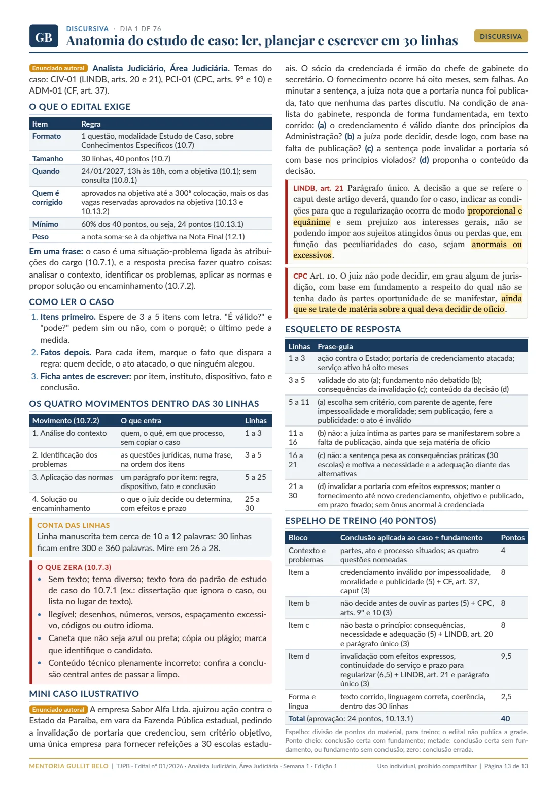
Gostou do jeito de explicar?
O material completo tem 66 dias de estudo, de segunda a sábado, para os 177 temas do edital, com treino no padrão da FGV e um estudo de caso por dia de estudo, num PDF por semana.
R$ 147 até 18/11, depois R$ 247, em até 12x no cartão
Ver o material e comprar